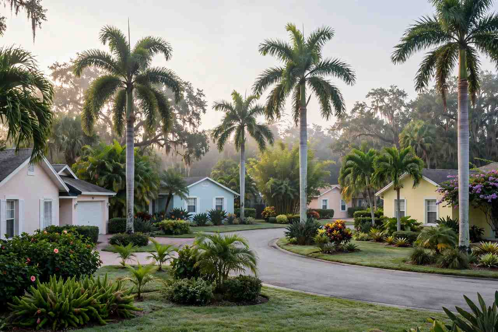

Rodent Control · Sharpes, FL
Trusted Rodent Control in Sharpes, FL
Hearing scratching at night or finding droppings in Sharpes? Murvo is a rodent-only specialist offering same-day service from local crews. We identify the species, remove the infestation, clean up the mess, and exclude rodents for good. Pricing is flat-rate and quoted in writing, the work is guaranteed in writing, and coverage extends across Brevard County for homes and businesses alike. Service covers 3 ZIP codes across Brevard County, including 32959, 32927, 32926, with same-day appointments where schedules allow.
24/7Availability
3ZIP codes covered
Same-dayResponse
Licensed · Upfront options · Written guarantees · Fully insured
Sharpes at a glance
Local Rodent Control for Sharpes, FL.
Brevard County
Countyeastern Florida
RegionPalm Bay · 33 mi
Nearest metro253 miles southeast of Tallahassee
From Tallahassee3
ZIP codes covered Service by service in Sharpes
Rodent Control Services Available in Sharpes
The full range of residential and commercial rodent services in Sharpes and Brevard County - built around the species and housing here, from emergency removal and same-day control to exclusion, proofing, trapping, cleanup, and damage repair. Every service below is quoted flat-rate in writing and backed by our workmanship guarantee.
- 01Rodent Control↗
- 02Rodent Inspection↗
- 03Rodent Removal↗
- 04Rodent Exclusion↗
- 05Rodent Proofing↗
- 06Rat Control↗
- 07Mice Control↗
- 08Mouse Removal↗
- 09Rat Removal↗
- 10Rodent Trapping↗
- 11Rodent Baiting↗
- 12Rodenticide Application↗
- 13Attic Rodent Removal↗
- 14Crawl Space Rodent Removal↗
- 15Wall Rodent Removal↗
- 16Kitchen Rodent Control↗
- 17Garage Rodent Control↗
- 18Commercial Rodent Control↗
- 19Residential Rodent Control↗
- 20Emergency Rodent Removal↗
- 21Same-Day Rodent Control↗
- 22Rodent Damage Repair↗
- 23Rodent Waste Cleanup↗
- 24Rodent Disinfection↗
- 25Rodent Odor Removal↗
- 26Dead Rodent Removal↗
- 27Rodent Dropping Cleanup↗
- 28Rodent Exclusion for Roofs↗
- 29Rodent Exclusion for Vents↗
- 30Rodent Exclusion for Chimneys↗
Rodent Control in Sharpes
Rodent Control in Sharpes
What does a finished job actually look like? No new droppings, no nighttime movement, and no open route back inside. That is the standard Murvo works toward in Sharpes, with background-checked technicians, a written workmanship guarantee, and follow-up checks that confirm the quiet is real rather than temporary luck.
Homeowners in Sharpes call Murvo for rodent control because the problem here is specific: Roof rat (Rattus rattus) pressure around ranch and stucco homes, waterfront and canal homes, condos, and vacation rentals, tight access at rooflines, eaves and soffits, attic and gable vents, pool equipment areas, and garage door seals, and activity that follows the local season. Our Brevard County crews diagnose the real source before recommending work, explain the options in plain language, and quote one flat rate in writing. Across Sharpes - including North Merritt Island, Cocoa - every visit is backed by licensed, insured technicians and our written workmanship guarantee. Homes near Cocoa tend to show activity first in Sharpes, which is why inspections start with rooflines, eaves and soffits, attic and gable vents, pool equipment areas, and garage door seals.
Consider how a visit unfolds. Inside, attic and crawl-space evidence shapes the trapping plan, which is adjusted visit by visit as numbers change. Cleanup guidance covers contaminated areas safely, and exclusion work closes the route permanently. Throughout, photographs and written notes keep you informed, so progress is something you can see and verify rather than something you are asked to trust. The technician walks the exterior before touching anything indoors, noting gaps, rub marks, and food sources. Photographs taken at the start make those later comparisons honest, because memory alone tends to blur the details.
After you book, we confirm a time window and your background-checked technician arrives in a marked vehicle with identification. They walk the property with you, inspect inside and out, and explain what they find with photos. You receive a flat-rate written quote before any work starts. Once approved, trapping and sealing begin, and follow-up visits are scheduled before we leave, with the guarantee in writing. No work begins without your approval.
In most of Sharpes, we can offer a same-day appointment for rodent control, and our lines are open 24/7 for urgent cases like scratching in the walls or a rodent in a living area. Your technician inspects first, explains the plan, and quotes a flat rate in writing before any work begins, so help starts fast without surprises. In Brevard County, most cases involve the Roof rat (Rattus rattus) and the Norway rat (Rattus norvegicus), so the inspection focuses on their routes first.
Murvo does not quote rodent control sight unseen, because species, activity, and sealing needs change the work involved. After inspection you get one flat-rate written quote, and that is the figure you pay. As national context only, Angi's 2026 figures put rat and mouse removal and control at an average of $396, with a typical range of $189 to $655 — a benchmark, not a Murvo price.
Rodent Inspection in Sharpes
Rodent Inspection in Sharpes
You do not need to see a rodent to have a rodent problem in Sharpes. Droppings in the attic, gnaw marks near rooflines, eaves and soffits, attic and gable vents, pool equipment areas, and garage door seals, or noises after dark are enough reason to book a rodent inspection. Murvo technicians check the whole property, photograph what they find, and give you a prioritized plan plus a flat-rate written quote for any work recommended.
In Sharpes, rodent inspection is not a generic spray-and-go service. Rodents exploit rooflines, eaves and soffits, attic and gable vents, pool equipment areas, and garage door seals in ranch and stucco homes, waterfront and canal homes, condos, and vacation rentals, and a fix that ignores those routes does not last. Murvo's Sharpes team inspects first, shows you the evidence - droppings, gnaw marks, entry gaps - and then lays out the work with a flat-rate written quote. We serve all of Brevard County from Sharpes, including North Merritt Island, Cocoa, and every job is covered by our written workmanship guarantee. In Sharpes, rodent inspection calls most often involve ranch and stucco homes, waterfront and canal homes, condos, and vacation rentals, where rooflines, eaves and soffits, attic and gable vents, pool equipment areas, and garage door seals decide whether the fix holds.
Timing often tells the story first. Technicians use what you report to focus the search, then verify it against physical evidence throughout ranch and stucco homes, waterfront and canal homes, condos, and vacation rentals. They check wiring and insulation for damage, test whether gaps at rooflines, eaves and soffits, attic and gable vents, pool equipment areas, and garage door seals are active, and mark each opening by size and species. The written report that follows ranks repairs clearly, so decisions rest on findings rather than guesswork or pressure. Noises at dusk suggest one pattern; droppings near stored food suggest another. Each recommendation in that report traces back to a photographed finding, keeping the whole assessment accountable.
Your part is simple: point out noises, droppings, and any past problems. Before leaving, you walk through the evidence together, discuss priorities, and decide what happens next, with no obligation attached. Ours is everything else. A background-checked technician arrives on time, protects access areas, and inspects inside and out against a set checklist. If you decide to proceed, those findings become the working plan, so no second survey is needed before approved repairs begin.
Inspections are the fastest way we help in Sharpes: same-day appointments are available in most areas, and urgent calls are answered 24/7. A typical rodent inspection takes under an hour for most homes, and you leave the visit with photos, written findings, and a flat-rate quote for any work we recommend, so decisions never wait on us. Murvo's Sharpes crews explain the finding either way, and the flat-rate quote leaves the decision with you.
Nationally, a professional rodent inspection typically runs $100 to $200 according to Angi's 2026 data, and it is often credited toward the job if you proceed. Murvo confirms your exact rodent inspection price before the visit and quotes any follow-up work as a flat rate in writing after inspection, so the figure you approve is the figure you pay, with no hourly billing.
Rodent Removal in Sharpes
Rodent Removal in Sharpes
Finding droppings in the kitchen or hearing scratching overhead in Sharpes means rodents are already living indoors, and they will not leave on their own. Murvo's rodent removal clears active Roof rat (Rattus rattus) and Norway rat (Rattus norvegicus) with targeted trapping, removes animals hygienically, and closes the entry points behind them. One flat-rate written quote covers the program before work begins.
In Sharpes, rodent removal is not a generic spray-and-go service. Rodents exploit rooflines, eaves and soffits, attic and gable vents, pool equipment areas, and garage door seals in ranch and stucco homes, waterfront and canal homes, condos, and vacation rentals, and a fix that ignores those routes does not last. Murvo's Sharpes team inspects first, shows you the evidence - droppings, gnaw marks, entry gaps - and then lays out the work with a flat-rate written quote. We serve all of Brevard County from Sharpes, including North Merritt Island, Cocoa, and every job is covered by our written workmanship guarantee. The Sharpes crews who handle rodent removal also handle the follow-through - proofing, cleanup, and monitoring - so one visit can close the whole problem.
Removal starts with an assessment of species, numbers, and access routes across attics, wall voids, garages, and kitchens. Once you approve the written quote, technicians set traps along proven runways, check them on schedule, and remove animals promptly and hygienically. Catch records show progress clearly instead of relying on guesswork. Removal is followed immediately by entry-point exclusion, because new rodents will replace removed ones through any gap left open, and disinfection is arranged after heavy activity. Photos document each stage for you.
Once you book rodent removal in Sharpes, we agree a time window and your technician arrives with traps, protective equipment, and a clear plan. Progress is photographed and shared with you throughout the program. The first visit confirms activity and sets traps; return visits clear and reset them on schedule. When catches reach zero, we walk through the results, discuss sealing, and confirm your written guarantee before closing the job. Nothing is left unexplained.
For active infestations in Sharpes, rodent removal can usually start the same day you call, and our team answers 24/7 when a rodent is loose in a living area. The first visit confirms activity and sets traps straight away; return visits then clear and reset them until monitoring shows the property is completely clear. Murvo's Sharpes crews explain the finding either way, and the flat-rate quote leaves the decision with you.
Cost depends on the species, how many animals are active, and how much sealing the home needs afterwards, so Murvo inspects first and quotes one flat rate in writing. For national context only, Angi's 2026 data averages rat and mouse removal at $396, typically $189 to $655. That benchmark is not a Murvo price; your written quote is the exact figure.
Rodent Exclusion in Sharpes
Rodent Exclusion in Sharpes
Rats can pass through a hole the size of a quarter, and mice through one far smaller, which is why ranch and stucco homes, waterfront and canal homes, condos, and vacation rentals in Sharpes hide so many working entry points around rooflines, eaves and soffits, attic and gable vents, pool equipment areas, and garage door seals. Our technicians inspect soffits, eaves, pipe entries, foundation cracks, and door sweeps in detail, then prioritize the openings that matter most for Roof rat (Rattus rattus) and Norway rat (Rattus norvegicus) locally.
Homeowners in Sharpes call Murvo for rodent exclusion because the problem here is specific: Roof rat (Rattus rattus) pressure around ranch and stucco homes, waterfront and canal homes, condos, and vacation rentals, tight access at rooflines, eaves and soffits, attic and gable vents, pool equipment areas, and garage door seals, and activity that follows the local season. Our Brevard County crews diagnose the real source before recommending work, explain the options in plain language, and quote one flat rate in writing. Across Sharpes - including North Merritt Island, Cocoa - every visit is backed by licensed, insured technicians and our written workmanship guarantee. Coverage for rodent exclusion spans 3 ZIP codes in Brevard County, including 32959, 32927, 32926.
Exclusion begins with a full exterior survey, paying particular attention to junctions where different materials meet, because those seams and transitions open up as a building ages and settles. Door sweeps are fitted, pipe gaps closed, and specialist roof, vent, and chimney sealing finished to weatherproof standards. Each opening is sealed with materials matched to it: copper mesh packed into gaps, hardware cloth over vents, metal flashing at roof junctions, and quality sealants for smaller cracks. Active animals are trapped out first.
Before sealing day, confirm pets are secured and access to the roofline and foundation is clear. The crew then works through the agreed list, checks that no animals remain inside, and fits each seal cleanly. Afterwards you receive the photographs, the guarantee, and a date for the follow-up check that confirms everything is holding as intended. If monitoring ever finds fresh activity at a sealed point, that written inventory tells us exactly what to inspect first.
Rodent exclusion in Sharpes usually starts with a survey visit we can often schedule the same day you call. Sealing itself is booked as soon as any active animals are cleared, because nothing is sealed inside. Most homes are fully sealed within days, not weeks, and urgent entry points near wiring or food areas are prioritized first. If you are seeing signs now, an inspection this week is the fastest way to know which situation you are in.
After the survey of your Sharpes home, every opening that needs sealing is listed and priced as one flat-rate written quote, so you pay only for the work your property needs. For national context, Angi's 2026 data puts basic exclusion at $200 to $600 depending on access and the number of openings; that benchmark is not a Murvo price.
Rodent Proofing in Sharpes
Rodent Proofing in Sharpes
Most Sharpes proofing clients have not seen a rodent yet, and that is exactly the point. A rodent proofing survey finds the gaps, screens, and habits that would invite Roof rat (Rattus rattus) and Norway rat (Rattus norvegicus) in later, then fixes them in priority order under one flat-rate written quote you approve first.
In Sharpes, rodent proofing is not a generic spray-and-go service. Rodents exploit rooflines, eaves and soffits, attic and gable vents, pool equipment areas, and garage door seals in ranch and stucco homes, waterfront and canal homes, condos, and vacation rentals, and a fix that ignores those routes does not last. Murvo's Sharpes team inspects first, shows you the evidence - droppings, gnaw marks, entry gaps - and then lays out the work with a flat-rate written quote. We serve all of Brevard County from Sharpes, including North Merritt Island, Cocoa, and every job is covered by our written workmanship guarantee. The Sharpes crews who handle rodent proofing also handle the follow-through - proofing, cleanup, and monitoring - so one visit can close the whole problem.
Materials follow the same standard as full exclusion work: copper mesh packed into irregular gaps, hardware cloth over openings that need airflow, flashing at vulnerable junctions, and sealants matched to smaller cracks. The written plan photographs each weakness, states who handles it, and schedules a seasonal re-check, since new gaps appear as a building ages and proofing works best as maintenance. Around kitchens, pipe runs and the voids behind units receive particular attention, because warmth and food meet there. Seasonal timing is noted in the plan as well.
Book a rodent proofing survey in Sharpes and we will arrange a visit time that suits your household, often the same day. You receive a flat-rate written quote separating essential from optional work. Approved sealing is completed cleanly, then a seasonal re-check is scheduled. Your technician walks the property with you, photographs weak points, and explains the plan in plain language. The finished work is fully guaranteed in writing by Murvo.
Rodent proofing is preventive, so there is rarely a rush, but surveys in Sharpes can often be arranged the same day you call, and always within a few days. Most proofing work is completed in a single visit once you approve the plan, and booking before colder weather gives your home protection ahead of the seasonal rush indoors. That is also why Murvo pairs removal with exclusion in Sharpes - treating the animal without closing rooflines, eaves and soffits, attic and gable vents, pool equipment areas, and garage door seals rarely lasts.
We survey your Sharpes property first, separate the quick wins you can handle yourself from the specialist sealing, and quote the professional work as one flat rate in writing so spending can be staged. Angi's 2026 national context puts exclusion, the core of proofing, at $200 to $600 for basic work — a benchmark only, not a Murvo price.
Rat Control in Sharpes
Rat Control in Sharpes
Rat problems escalate quietly across Brevard County: gnawed wiring, contaminated insulation, and droppings spreading through storage areas before anyone sees an animal. Murvo answers with same-day appointments where available and a 24/7 line for urgent cases. Every visit is documented, trapped rats are removed hygienically, and the program finishes with exclusion so the next group cannot simply move in.
In Sharpes, rat control is not a generic spray-and-go service. Rodents exploit rooflines, eaves and soffits, attic and gable vents, pool equipment areas, and garage door seals in ranch and stucco homes, waterfront and canal homes, condos, and vacation rentals, and a fix that ignores those routes does not last. Murvo's Sharpes team inspects first, shows you the evidence - droppings, gnaw marks, entry gaps - and then lays out the work with a flat-rate written quote. We serve all of Brevard County from Sharpes, including North Merritt Island, Cocoa, and every job is covered by our written workmanship guarantee. The Sharpes crews who handle rat control also handle the follow-through - proofing, cleanup, and monitoring - so one visit can close the whole problem.
Safety shapes every placement decision. Where bait is genuinely necessary outdoors, it goes only inside locked, tamper-resistant stations, secured and labeled, never loose, and always alongside trapping and sealing rather than instead of them. Droppings are handled carefully: surfaces are disinfected before cleaning, never dry-swept, because disturbing dry material can spread contamination through the air. Traps are positioned away from pet routes and play areas and explained to the household in advance. Households receive that safety briefing in plain terms before the first station or trap is ever left behind.
After booking, we confirm access to attics, basements, and outbuildings so the first visit is productive. On arrival, your background-checked technician walks the property with you, sets out the plan, and starts pre-baiting straight away once you approve the quote. Follow-up visits are booked ahead, trapped rats are removed promptly, and a final monitoring check verifies the result before sign-off under our written workmanship guarantee. You see documented progress at each visit.
Call day or night — urgent rat control calls in Sharpes are answered 24/7, and a same-day inspection can usually start the program. Pre-baiting begins on that first visit once you approve the written quote, traps are set when rats are feeding confidently, and scheduled checks continue until activity stops. The written quote for your Sharpes property will spell out exactly which of these applies before any work starts.
Species, colony size, and the number of entry points to seal all affect rat work, which is why Murvo inspects first and quotes one flat rate in writing. Angi's 2026 figures, given for national context only, average rat control and removal at $396 and typically run $189 to $655; the written quote for your Sharpes home is the exact price.
Mice Control in Sharpes
Mice Control in Sharpes
Mice slip into ranch and stucco homes, waterfront and canal homes, condos, and vacation rentals in Sharpes through rooflines, eaves and soffits, attic and gable vents, pool equipment areas, and garage door seals and settle near warmth and food: behind appliances, inside attic voids, and along pipe runs. Because they investigate new objects quickly, clustered traps work fast when placed correctly. Our licensed, insured technicians also advise on food storage and scent-trail cleaning, then confirm with follow-up visits that activity has genuinely stopped.
When you need mice control in Sharpes, the job starts with what is actually happening in your part of Brevard County. Murvo crews work Sharpes every week, so they know how Roof rat (Rattus rattus) and Norway rat (Rattus norvegicus) behave around ranch and stucco homes, waterfront and canal homes, condos, and vacation rentals here - and where they get in: rooflines, eaves and soffits, attic and gable vents, pool equipment areas, and garage door seals. We arrive equipped for the full job, confirm the flat rate in writing before work begins, and cover the whole Sharpes area, including North Merritt Island, Cocoa. No call-center runaround and no open-ended hourly billing - just a local crew, a clear plan, and a written quote you approve first. Homes near Cocoa tend to show activity first in Sharpes, which is why inspections start with rooflines, eaves and soffits, attic and gable vents, pool equipment areas, and garage door seals.
Hygiene is part of control, not an afterthought. Technicians also review how food, pet supplies, and bird seed are stored, since an open supply restarts activity quickly. The program favors traps over bait throughout, which keeps family kitchens safer and makes every result countable and visible. Droppings in cabinets are never dry-swept; surfaces are disinfected first, following careful practice, so contamination is not pushed into the air, and nesting debris is bagged and removed. Follow-up monitoring then verifies the kitchen, attic, and voids together, rather than treating each room in isolation.
Book mice control in Sharpes with one call, and same-day visits are available in many areas. Your technician surveys the kitchen, attic, and voids, explains where mice are traveling, and gives you a flat-rate written quote before setting a single trap. Trap checks are scheduled before we leave, and a follow-up visit confirms activity has stopped before the job is signed off. Everything is explained in plain language for your household.
Mice multiply fast, so mice control in Sharpes is built to start fast too: a survey can often be arranged the same day you call, with traps set on that first visit once the quote is approved. Because mice investigate new objects quickly, catches usually begin soon after, and check visits follow until a final confirmation shows activity has stopped. The written quote for your Sharpes property will spell out exactly which of these applies before any work starts.
Mouse work is priced by the number of rooms affected and the amount of sealing involved, so Murvo surveys first and quotes one flat rate in writing. For national context only, Angi's 2026 data averages rat and mouse control and removal at $396, typically $189 to $655. That is not a Murvo price; your written quote is exact.
Mouse Removal in Sharpes
Mouse Removal in Sharpes
You found droppings in a cabinet or heard scratching in the attic of your Sharpes home, and you want the mice out, not managed indefinitely. Murvo's mouse removal locates nests and feeding areas room by room, runs a multi-trap program until catches reach zero, and seals access points behind it. One flat-rate written quote is agreed before work begins.
When you need mouse removal in Sharpes, the job starts with what is actually happening in your part of Brevard County. Murvo crews work Sharpes every week, so they know how Roof rat (Rattus rattus) and Norway rat (Rattus norvegicus) behave around ranch and stucco homes, waterfront and canal homes, condos, and vacation rentals here - and where they get in: rooflines, eaves and soffits, attic and gable vents, pool equipment areas, and garage door seals. We arrive equipped for the full job, confirm the flat rate in writing before work begins, and cover the whole Sharpes area, including North Merritt Island, Cocoa. No call-center runaround and no open-ended hourly billing - just a local crew, a clear plan, and a written quote you approve first. Seasonal timing matters for mouse removal in Sharpes: Rodents are active year-round in Sharpes because there is no hard freeze.
The survey comes first, and it is deliberately thorough. Returns are scheduled tightly: catches are cleared, traps reset, and numbers tracked until they fall to zero and stay there across a confirming check before sealing begins. Lofts, under-floor voids, cabinets, and the spaces behind kitchen units are checked for nests, droppings, and stored food caches. Traps are then set in multiples at proven points, because a single trap rarely reflects colony size. Photographs of nesting sites help here, because they reveal how far activity had spread before trapping began.
For mice active in living areas, call and we will aim for a same-day start where available. Traps are placed only after approval, return visits are booked ahead, and you receive a plain update after every check without chasing. The first visit surveys nesting sites, sets out the multi-trap plan, and confirms your written quote. Rooms are returned to normal use as soon as their checks are clear, and we tell you plainly which areas those are.
In Sharpes, mouse removal can often begin the same day you call, especially where mice are active in kitchens or living areas. The first visit surveys nesting sites and sets traps immediately after you approve the quote; because mice investigate traps quickly, catches usually start fast, and return visits continue until numbers reach zero. In Brevard County, most cases involve the Roof rat (Rattus rattus) and the Norway rat (Rattus norvegicus), so the inspection focuses on their routes first.
Rooms involved and sealing needed determine the cost of removal, so we survey first and agree a flat rate in writing before work begins. As national context only, Angi's 2026 data averages rat and mouse removal at $396, with a typical range of $189 to $655; that benchmark is not a Murvo price, and your written quote covers your exact program.
Rat Removal in Sharpes
Rat Removal in Sharpes
If rats are active in your Sharpes home right now, Murvo offers a same-day response and a clear written plan, with lines open 24/7 for urgent cases. Removal is delivered as one coordinated job: trapping, hygienic disposal, prevention, and a final walkthrough with monitoring evidence, so you are never asked to simply take our word that activity ended.
In Sharpes, rat removal is not a generic spray-and-go service. Rodents exploit rooflines, eaves and soffits, attic and gable vents, pool equipment areas, and garage door seals in ranch and stucco homes, waterfront and canal homes, condos, and vacation rentals, and a fix that ignores those routes does not last. Murvo's Sharpes team inspects first, shows you the evidence - droppings, gnaw marks, entry gaps - and then lays out the work with a flat-rate written quote. We serve all of Brevard County from Sharpes, including North Merritt Island, Cocoa, and every job is covered by our written workmanship guarantee. Homes near Cocoa tend to show activity first in Sharpes, which is why inspections start with rooflines, eaves and soffits, attic and gable vents, pool equipment areas, and garage door seals.
Removal begins by establishing species and the scale of the problem, because a single transient rat and an attic colony need very different programs. Technicians pre-bait unset traps on confirmed runways so cautious rats feed without fear, then set them, returning frequently to remove animals hygienically and adjust placements as activity shifts. Attic colonies may need dedicated attic work, while a carcass in a void calls for retrieval and odor treatment. Sealing follows once the property is clear. Nothing is rushed at this stage.
After booking, we confirm access needs for the attic, basement, or outbuildings so no time is wasted. On the first visit, your background-checked technician sets out the plan and begins pre-baiting once you approve the written quote. Follow-up visits run on schedule until catches stop, then sealing and sanitation are completed. A final monitoring period confirms the home is clear before sign-off. Progress is reported to you after every single visit.
Rats in a living area cannot wait for a routine slot. In Sharpes, rat removal can usually start the same day you call and our line answers 24/7 for urgent cases. Pre-baiting starts on the first visit after you approve the written quote, traps are set once rats feed confidently — typically within days — and frequent returns run until monitoring confirms the colony is gone. That is also why Murvo pairs removal with exclusion in Sharpes - treating the animal without closing rooflines, eaves and soffits, attic and gable vents, pool equipment areas, and garage door seals rarely lasts.
Rat removal pricing depends on colony size, access, and the sealing needed afterwards, so Murvo assesses your property first and quotes a flat rate in writing. For national context only, Angi's 2026 data averages rat removal at $396, typically $189 to $655. That is a benchmark, not a Murvo price, and your written quote covers the full program described.
Rodent Trapping in Sharpes
Rodent Trapping in Sharpes
Most Sharpes trapping programs succeed or fail on placement, not equipment. Murvo maps runways from droppings and rub marks first, then positions traps perpendicular to walls and along beams and pipes where rodents genuinely travel. You approve one flat-rate written quote covering the program and its check visits.
Homeowners in Sharpes call Murvo for rodent trapping because the problem here is specific: Roof rat (Rattus rattus) pressure around ranch and stucco homes, waterfront and canal homes, condos, and vacation rentals, tight access at rooflines, eaves and soffits, attic and gable vents, pool equipment areas, and garage door seals, and activity that follows the local season. Our Brevard County crews diagnose the real source before recommending work, explain the options in plain language, and quote one flat rate in writing. Across Sharpes - including North Merritt Island, Cocoa - every visit is backed by licensed, insured technicians and our written workmanship guarantee. In Sharpes, rodent trapping calls most often involve ranch and stucco homes, waterfront and canal homes, condos, and vacation rentals, where rooflines, eaves and soffits, attic and gable vents, pool equipment areas, and garage door seals decide whether the fix holds.
Trap selection covers snap traps for quick, humane dispatch, multi-catch devices for busy mouse routes, and live-capture options where you prefer release away from the home. As catches fall, we recommend exclusion sealing, plus droppings cleanup for affected areas, moving the program from active trapping to monitoring and final sign-off. Baits and lures are matched to species and location, and all devices are positioned with pet and child safety in mind and explained to your household. Every device location is mapped for you.
Call to book, and a first visit can often happen the same day. Scheduled returns then clear, reset, and record catches, sharing the running total with you at every single visit. That visit maps activity, places or pre-baits devices, and produces your written quote for the full program including checks. Nothing proceeds without approval. Catch records are never an afterthought; they are the evidence that decides when trapping ends and monitoring alone takes over.
In Sharpes, rodent trapping can usually start the same day you call, with traps placed or pre-baiting begun on the first visit after you approve the quote. Mice often investigate within the first night; wary rats need a few days of pre-baiting before traps are set. Scheduled check visits then keep catches moving until numbers reach zero. A Sharpes inspection confirms it on site - dropping size, gnaw marks, and entry points tell the story quickly.
Rather than charging by the trap or by the visit, Murvo inspects first and quotes rodent trapping as one flat rate in writing for the complete program, including its check visits. Price depends on species, activity level, and how many checks are needed, and there is no hourly billing at any stage, so there are no per-visit surprises.
Rodent Baiting in Sharpes
Rodent Baiting in Sharpes
In ranch and stucco homes, waterfront and canal homes, condos, and vacation rentals, bait has a narrow, specific job: reducing outdoor pressure while sealing removes the indoor route through rooflines, eaves and soffits, attic and gable vents, pool equipment areas, and garage door seals. Our technicians in Brevard County place secured stations along runways away from play areas, label and photograph each one, and check consumption on schedule until activity ends and stations come out.
In Sharpes, rodent baiting is not a generic spray-and-go service. Rodents exploit rooflines, eaves and soffits, attic and gable vents, pool equipment areas, and garage door seals in ranch and stucco homes, waterfront and canal homes, condos, and vacation rentals, and a fix that ignores those routes does not last. Murvo's Sharpes team inspects first, shows you the evidence - droppings, gnaw marks, entry gaps - and then lays out the work with a flat-rate written quote. We serve all of Brevard County from Sharpes, including North Merritt Island, Cocoa, and every job is covered by our written workmanship guarantee. The Sharpes crews who handle rodent baiting also handle the follow-through - proofing, cleanup, and monitoring - so one visit can close the whole problem.
Baiting follows Inspect, Remove, Exclude, Clean, and Monitor, and it never stands alone. We return on schedule to check consumption, record amounts, and adjust positions, and stations are removed when activity ends rather than left indefinitely. After a full inspection maps activity, background-checked technicians choose station locations along runways, fence lines, and entry points, away from pet play areas and food storage. Every station is tamper-resistant, locked, labeled, and anchored, with placement photographed for your records. Loose bait is never used anywhere.
Booking rodent baiting in Sharpes starts with an inspection, not a station. Approved stations are installed locked and labeled the same visit, with locations photographed for you. Monitoring visits are scheduled before we leave, and stations come out once activity is confirmed clear. Your technician maps activity, reviews pet, child, and wildlife concerns with you, and confirms a flat-rate written quote before anything is placed. Your written guarantee covers the full program.
Deliberate setup matters more than speed with rodent baiting, but the first step is still fast: an inspection in Sharpes can often be arranged the same day you call. Stations are placed only after activity is mapped and you approve the written quote and each location, then monitoring runs on a fixed schedule until consumption stops and activity is confirmed clear. That is also why Murvo pairs removal with exclusion in Sharpes - treating the animal without closing rooflines, eaves and soffits, attic and gable vents, pool equipment areas, and garage door seals rarely lasts.
Baiting cost depends on how many locked stations your property needs and how long monitoring runs, so Murvo inspects and maps activity first, then quotes one flat rate in writing covering placement and scheduled checks. There are no per-visit surprises, and because our approach is exclusion-first, the goal is always to reduce and eventually remove stations, not maintain them forever.
Rodenticide Application in Sharpes
Rodenticide Application in Sharpes
What does the law in Florida allow, and what will you be told? State rules restrict certain rodenticides, and Murvo complies with every applicable rule on every job. You receive label and safety information for any product used at your Sharpes property before application begins.
When you need rodenticide application in Sharpes, the job starts with what is actually happening in your part of Brevard County. Murvo crews work Sharpes every week, so they know how Roof rat (Rattus rattus) and Norway rat (Rattus norvegicus) behave around ranch and stucco homes, waterfront and canal homes, condos, and vacation rentals here - and where they get in: rooflines, eaves and soffits, attic and gable vents, pool equipment areas, and garage door seals. We arrive equipped for the full job, confirm the flat rate in writing before work begins, and cover the whole Sharpes area, including North Merritt Island, Cocoa. No call-center runaround and no open-ended hourly billing - just a local crew, a clear plan, and a written quote you approve first. In Sharpes, rodenticide application calls most often involve ranch and stucco homes, waterfront and canal homes, condos, and vacation rentals, where rooflines, eaves and soffits, attic and gable vents, pool equipment areas, and garage door seals decide whether the fix holds.
The first decision is whether application is justified, and often it is not. Where treatment is justified, stations are mapped, anchored, and labeled, products remain inside locked units at all times, and scheduled checks record amounts precisely. Monitoring data then governs whether treatment continues, changes, or stops in favor of proofing alone. Inspection confirms species and activity, then trapping and exclusion are weighed honestly; if those methods can solve the problem safely, they are recommended instead. If consumption patterns look unusual, technicians investigate rather than simply refilling, because unexpected patterns can signal a different species.
After booking, we discuss children, pets, livestock, and wildlife at your property before the visit, so product decisions are informed from the start. On arrival, your background-checked technician inspects, talks you through the plan and label information, and only applies product once you approve the written quote. Scheduled checks follow, amounts are recorded and reported, and stations are removed when activity is confirmed clear. Safety information stays with you throughout the program.
No responsible rodenticide application starts without an inspection, and in Sharpes that inspection can often be scheduled the same day you call. If treatment is justified and you approve the written quote, locked stations are installed on that visit. Monitoring then runs on schedule, and treatment stops as soon as the data shows activity has ended. In Brevard County, most cases involve the Roof rat (Rattus rattus) and the Norway rat (Rattus norvegicus), so the inspection focuses on their routes first.
Station numbers, the product permitted under Florida rules, and the length of monitoring all shape the price. Murvo inspects first, explains whether trapping or exclusion could avoid chemical control entirely, and then quotes one flat rate in writing before work begins. That quote covers scheduled monitoring visits, so there are no per-visit surprises later.
Attic Rodent Removal in Sharpes
Attic Rodent Removal in Sharpes
When chewed wiring appears overhead, treat it as urgent; damaged cables are a real fire risk. Murvo prioritizes those Sharpes attics, clears animals with targeted trapping rather than poison, leaves monitoring briefly after sealing to confirm nothing remains inside, and backs the finished work with a written workmanship guarantee.
When you need attic rodent removal in Sharpes, the job starts with what is actually happening in your part of Brevard County. Murvo crews work Sharpes every week, so they know how Roof rat (Rattus rattus) and Norway rat (Rattus norvegicus) behave around ranch and stucco homes, waterfront and canal homes, condos, and vacation rentals here - and where they get in: rooflines, eaves and soffits, attic and gable vents, pool equipment areas, and garage door seals. We arrive equipped for the full job, confirm the flat rate in writing before work begins, and cover the whole Sharpes area, including North Merritt Island, Cocoa. No call-center runaround and no open-ended hourly billing - just a local crew, a clear plan, and a written quote you approve first. In Sharpes, attic rodent removal calls most often involve ranch and stucco homes, waterfront and canal homes, condos, and vacation rentals, where rooflines, eaves and soffits, attic and gable vents, pool equipment areas, and garage door seals decide whether the fix holds.
Attic work follows Inspect, Remove, Exclude, Clean, and Monitor. Targeted, humane trapping is then set in the attic to clear active animals quickly, with checks on schedule. Once clear, roofline entry points are sealed with metal mesh and flashing as part of wider proofing, and dropping cleanup and disinfection are arranged where insulation is contaminated. A detailed inspection covers the attic, roof, and eaves, identifying species, nests, droppings, and gnawed cables. Monitoring traps stay briefly after sealing to confirm the attic is empty and quiet.
Book an attic visit, same-day where wiring damage or heavy activity makes it urgent. Your technician inspects overhead and along the roofline, shows you photographs of the evidence, and confirms the written quote. Trapping starts after approval, follow-up checks are booked ahead, and sealing plus cleanup complete the sequence before monitoring confirms the result. Wiring or insulation concerns are flagged separately in writing, so you can arrange any specialist repairs with clear information in hand.
In Sharpes, attic rodent removal visits are often available the same day, and we prioritize attics where chewed wiring creates a fire risk. Trapping starts on the first visit after you approve the written quote, checks run on schedule, and most attics are cleared and sealed within days, with monitoring left briefly to confirm nothing remains inside. Murvo's Sharpes crews explain the finding either way, and the flat-rate quote leaves the decision with you.
Activity levels, roofline sealing, and whether contaminated insulation needs cleanup all affect attic pricing, so Murvo inspects first and quotes one flat rate in writing for the removal program. Cleanup options are priced separately in writing before you decide, so nothing is added once work is underway.
Crawl Space Rodent Removal in Sharpes
Crawl Space Rodent Removal in Sharpes
Droppings under the house, a torn vapor barrier, and smells drifting up through the floors are classic signs rodents are living beneath your Sharpes home. Murvo's crawl space rodent removal inspects the under-home space, traps active animals there, and seals foundation vents and gaps. Because activity below often connects to the attic through wall voids, we trace the full route.
In Sharpes, crawl space rodent removal is not a generic spray-and-go service. Rodents exploit rooflines, eaves and soffits, attic and gable vents, pool equipment areas, and garage door seals in ranch and stucco homes, waterfront and canal homes, condos, and vacation rentals, and a fix that ignores those routes does not last. Murvo's Sharpes team inspects first, shows you the evidence - droppings, gnaw marks, entry gaps - and then lays out the work with a flat-rate written quote. We serve all of Brevard County from Sharpes, including North Merritt Island, Cocoa, and every job is covered by our written workmanship guarantee. The Sharpes crews who handle crawl space rodent removal also handle the follow-through - proofing, cleanup, and monitoring - so one visit can close the whole problem.
The sequence is Inspect, Remove, Exclude, Clean, and Monitor. Targeted trapping then removes active rats and mice below the house, with checks on schedule. After clearance, vent exclusion with sturdy mesh and sealing of pier and plumbing gaps close the space, and waste cleanup removes droppings and nesting material. A full under-home inspection with photo documentation establishes species, nesting areas, and damage to vapor barrier and pipe insulation. Monitoring checks confirm activity has ended before we close the job properly.
Schedule an under-home inspection, usually within days and sooner when odors reach living areas. Clearance, vent screening, and cleanup then follow in sequence, with monitoring left in place until the space below is confirmed quiet. Your technician photographs conditions below, explains findings in plain language, and confirms the written quote before any trapping. Photographs from below the home accompany the final paperwork, which is especially useful because few homeowners ever see that space themselves.
For crawl space rodent removal in Sharpes, inspections are usually arranged within a few days — and sooner when odors are drifting into living areas or activity sounds heavy. Trapping begins on the first visit after you approve the written quote, clearance and sealing follow in sequence, and monitoring stays in place until the space below is confirmed quiet. A Sharpes inspection confirms it on site - dropping size, gnaw marks, and entry points tell the story quickly.
Crawl-space costs depend on access, how many vents and gaps need sealing, and whether waste cleanup is required, so Murvo inspects first and quotes one flat rate in writing. If extra vents need sealing within the agreed scope, there are no surprises, and cleanup options are priced in writing before you decide whether to include them.
Wall Rodent Removal in Sharpes
Wall Rodent Removal in Sharpes
Wall voids are hidden highways through ranch and stucco homes, waterfront and canal homes, condos, and vacation rentals in Sharpes: mice travel them between kitchens and attics, and rats use them to reach food unseen via rooflines, eaves and soffits, attic and gable vents, pool equipment areas, and garage door seals. Our technicians carry inspection cameras for accessible voids, helping locate nests without opening large sections of drywall. If an animal has already died in the wall, retrieval and sanitation are handled too.
Homeowners in Sharpes call Murvo for wall rodent removal because the problem here is specific: Roof rat (Rattus rattus) pressure around ranch and stucco homes, waterfront and canal homes, condos, and vacation rentals, tight access at rooflines, eaves and soffits, attic and gable vents, pool equipment areas, and garage door seals, and activity that follows the local season. Our Brevard County crews diagnose the real source before recommending work, explain the options in plain language, and quote one flat rate in writing. Across Sharpes - including North Merritt Island, Cocoa - every visit is backed by licensed, insured technicians and our written workmanship guarantee. Seasonal timing matters for wall rodent removal in Sharpes: Rodents are active year-round in Sharpes because there is no hard freeze.
Wall work follows Inspect, Remove, Exclude, Clean, and Monitor. We start by locating activity precisely, tracing entry routes from the roofline, baseboards, and pipe runs into the void, and using cameras where access allows. Trapping is then placed at void access points to draw rodents out, and technicians return to clear traps and adjust positions if monitoring shows activity has moved to another void. Only where an animal cannot be reached any other way do we agree a minimal, repairable access cut.
After booking, tell us when the noises happen; timing helps pinpoint the active void before we arrive. Sign-off happens only when monitoring confirms silence. On the day, your background-checked technician listens, traces, and inspects with cameras where possible, then sets traps at access points once you approve the quote. Follow-up visits clear traps and run quiet-wall checks at different times of day. Any access cut is agreed and made good neatly.
Persistent wall scratching in Sharpes often qualifies for a same-day locating visit, especially when it is keeping you awake. On that first visit, once you approve the written quote, traps are set at void access points; because rodents travel the void nightly, results usually follow within days. Quiet-wall checks confirm the silence before we sign off. A Sharpes inspection confirms it on site - dropping size, gnaw marks, and entry points tell the story quickly.
How precisely the activity can be located, and whether a minimal access cut turns out to be needed, decide the price of wall work. Murvo therefore locates the activity first and quotes a flat rate in writing, covering the trapping, sealing, and monitoring in your plan, so wall access never becomes an open-ended bill.
Kitchen Rodent Control in Sharpes
Kitchen Rodent Control in Sharpes
If you are hearing scratching under units at night in Sharpes, the kitchen is rarely the whole story. Murvo traces routes from wall voids and basements, sets discreet traps away from food surfaces, and seals the real entry points. You get one flat-rate written quote before work starts.
In Sharpes, kitchen rodent control is not a generic spray-and-go service. Rodents exploit rooflines, eaves and soffits, attic and gable vents, pool equipment areas, and garage door seals in ranch and stucco homes, waterfront and canal homes, condos, and vacation rentals, and a fix that ignores those routes does not last. Murvo's Sharpes team inspects first, shows you the evidence - droppings, gnaw marks, entry gaps - and then lays out the work with a flat-rate written quote. We serve all of Brevard County from Sharpes, including North Merritt Island, Cocoa, and every job is covered by our written workmanship guarantee. In Sharpes, kitchen rodent control calls most often involve ranch and stucco homes, waterfront and canal homes, condos, and vacation rentals, where rooflines, eaves and soffits, attic and gable vents, pool equipment areas, and garage door seals decide whether the fix holds.
Work begins with a kitchen-focused inspection behind fridges, ovens and sinks, inside cabinets and along kickboards, reading droppings and grease marks to identify the species and its routes. We then trace activity into wall voids and adjoining rooms, seal gaps around waste pipes and cabinet holes with durable materials, disinfect contaminated areas, and monitor until activity stops completely. Discreet traps are placed away from food preparation surfaces, never loose poison where children, pets or food could reach it. Nothing is left to guesswork at any stage.
After you book, a licensed, background-checked Murvo technician arrives at the agreed time and inspects behind appliances, sinks and cabinets. Follow-up monitoring continues until kitchen activity stops, and the work is backed by our written workmanship guarantee. You receive a flat-rate written quote before anything starts. Once approved, trapping and sealing go ahead, contaminated areas are disinfected, and we explain the hygiene notes for your layout. You stay informed at every stage of the work.
You can reach us by phone 24/7, and reports of droppings close to food preparation surfaces are given priority when we schedule. A same-day visit in Sharpes may be possible in many cases, depending on technician availability. When you call, tell us what you found and we will offer the earliest appointment available. If you are seeing signs now, an inspection this week is the fastest way to know which situation you are in.
For national context, Angi's 2026 figures put rat extermination at $189-$655, averaging $396, but those figures are not Murvo prices. What your kitchen needs — trapping, sealing and follow-up monitoring — is assessed on site first. Murvo then provides one flat-rate written quote with no hourly billing, and work only begins after you approve it.
Garage Rodent Control in Sharpes
Garage Rodent Control in Sharpes
Garages give Roof rat (Rattus rattus) and Norway rat (Rattus norvegicus) shelter, stored food and a quiet route into the house, especially through gaps under the door. Our garage rodent control in Sharpes removes rodents, seals door and wall entry points, and protects stored belongings, vehicles and wiring from gnaw damage. That is the standard Murvo works to in Florida.
When you need garage rodent control in Sharpes, the job starts with what is actually happening in your part of Brevard County. Murvo crews work Sharpes every week, so they know how Roof rat (Rattus rattus) and Norway rat (Rattus norvegicus) behave around ranch and stucco homes, waterfront and canal homes, condos, and vacation rentals here - and where they get in: rooflines, eaves and soffits, attic and gable vents, pool equipment areas, and garage door seals. We arrive equipped for the full job, confirm the flat rate in writing before work begins, and cover the whole Sharpes area, including North Merritt Island, Cocoa. No call-center runaround and no open-ended hourly billing - just a local crew, a clear plan, and a written quote you approve first. Seasonal timing matters for garage rodent control in Sharpes: Rodents are active year-round in Sharpes because there is no hard freeze.
We start by reading the evidence: droppings along edges, shredded cardboard, grease marks and entry gaps at rooflines, eaves and soffits, attic and gable vents, pool equipment areas, and garage door seals. Trapping is placed along walls and behind storage where rodents travel, checked and adjusted on follow-up visits. Next comes proofing: door seals, vents and utility penetrations sealed, damaged materials removed, and attractants such as open pet food addressed. Because garages feed activity into the rest of the home, adjoining rooms are checked too, so the problem is solved rather than displaced. Your technician explains each stage as the work progresses.
Booking is one call. When monitoring shows the garage is clear, we close the job, with the guarantee in writing. On arrival we inspect first, explain what we found in plain language, and give one written flat-rate price for the whole plan. Traps are set, entry points sealed and contaminated material dealt with safely. Follow-up visits check activity levels and adjust the plan if rodents are still moving. Questions are answered honestly throughout, with findings in writing.
Our phones are answered 24/7, and garages with active nesting, damaged wiring or movement into the house are treated as urgent. Depending on technician schedules, a same-day appointment in Sharpes is often possible. Describe the signs when you call and we will offer the earliest visit we can arrange. A Sharpes inspection confirms it on site - dropping size, gnaw marks, and entry points tell the story quickly.
Pricing depends on garage size, how established the infestation is, and how much proofing the doors and walls need. Murvo inspects first and quotes one flat rate in writing, covering trapping, nest removal, sealing and monitoring, with no hourly charges. Nothing starts until you approve that price, and the completed work is backed by our written workmanship guarantee.
Commercial Rodent Control in Sharpes
Commercial Rodent Control in Sharpes
Rodents threaten more than stock: they threaten licences, ratings and reputation. Murvo builds commercial programs for Sharpes businesses around inspection, removal, exclusion and monitoring, scheduled discreetly around trading hours. You receive a flat-rate written quote for initial work and clear scheduled-service pricing afterwards. Call Murvo today for straightforward help.
Homeowners in Sharpes call Murvo for commercial rodent control because the problem here is specific: Roof rat (Rattus rattus) pressure around ranch and stucco homes, waterfront and canal homes, condos, and vacation rentals, tight access at rooflines, eaves and soffits, attic and gable vents, pool equipment areas, and garage door seals, and activity that follows the local season. Our Brevard County crews diagnose the real source before recommending work, explain the options in plain language, and quote one flat rate in writing. Across Sharpes - including North Merritt Island, Cocoa - every visit is backed by licensed, insured technicians and our written workmanship guarantee. Around Cocoa, Port St. John, Tropical Park, the pattern is similar: Norway rat (Rattus norvegicus) finds rooflines, eaves and soffits, attic and gable vents, pool equipment areas, and garage door seals first, and lasting commercial rodent control has to close those routes.
What inspectors want is a system, and that is how we work. Visits run outside peak trading where possible, and any live sighting during service gets handled quietly. Risks get ranked by area, from food storage to waste handling, so urgent gaps close first. Staff learn which early signs to report and whom to call. Over time, trend notes show whether pressure is falling, holding or shifting to a new area, letting you adjust deliveries, storage or building repairs before a minor issue becomes a failed audit.
After you make contact, a surveyor visits at a time that suits trading, inspects the whole site and identifies risks. Monitoring continues on schedule, trends are reviewed with you, and the program adjusts as activity falls. You receive a written proposal with flat-rate pricing for initial work before anything starts. Approved work begins discreetly, with reports after every visit for your audit file. Emergency response is available 24/7 for urgent sightings.
Our commercial lines are open 24/7, and live sightings during trading hours are treated as emergencies and handled discreetly. Response in Sharpes depends on technician availability, but we will always offer the earliest visit we can and advise on immediate steps to protect stock, customers and your audit position. Around Sharpes, ranch and stucco homes, waterfront and canal homes, condos, and vacation rentals give rodents the most cover, which is why entry points get checked before traps are set.
Commercial pricing depends on site size, sector, activity levels and how much exclusion and monitoring the site needs. Restaurants, warehouses and food premises are scoped individually after a survey. Murvo quotes a flat rate in writing for initial work, or a clear scheduled-service price for ongoing programs, before anything begins. There are no vague charges, and reports are included for your audit file.
Residential Rodent Control in Sharpes
Residential Rodent Control in Sharpes
Murvo is a rodent-only specialist, and homes are where that focus counts most. In Sharpes we inspect attics, crawl spaces, garages and kitchens as one connected system, then remove, exclude, clean and monitor. You approve a flat-rate written quote before any work begins. It is a complete service, not a quick spray.
When you need residential rodent control in Sharpes, the job starts with what is actually happening in your part of Brevard County. Murvo crews work Sharpes every week, so they know how Roof rat (Rattus rattus) and Norway rat (Rattus norvegicus) behave around ranch and stucco homes, waterfront and canal homes, condos, and vacation rentals here - and where they get in: rooflines, eaves and soffits, attic and gable vents, pool equipment areas, and garage door seals. We arrive equipped for the full job, confirm the flat rate in writing before work begins, and cover the whole Sharpes area, including North Merritt Island, Cocoa. No call-center runaround and no open-ended hourly billing - just a local crew, a clear plan, and a written quote you approve first. Homes near Cocoa tend to show activity first in Sharpes, which is why inspections start with rooflines, eaves and soffits, attic and gable vents, pool equipment areas, and garage door seals.
Residential work prioritizes exclusion over poison. Where droppings or nesting are present, cleanup follows safe disinfection practice. You receive a clear record of what was found, what was sealed and what to watch for, plus a prevention plan covering storage, vegetation and waste around the home. Safety of occupants and pets guides every method chosen. After inspection and trapping, we proof the building fabric, check vents, doors and pipe penetrations, and monitor with follow-up visits until signs stop. Nothing is left to guesswork at any stage.
When you book, we note pets, children and access needs so the visit runs smoothly. Approved work removes the rodents, seals their entry points and cleans contaminated areas safely. Monitoring continues afterwards, with honest updates at every visit. We finish with prevention advice tailored to your home, and the guarantee covering the work is provided in writing. Your technician inspects, plans and quotes in writing before starting. The plan is agreed with you before any work begins.
We are available 24/7 by phone, and homes with rodents in living areas, kitchens or children's bedrooms are prioritized. Same-day visits in Sharpes are often possible, subject to technician availability. Tell us what you have seen or heard, and we will offer the earliest appointment available and advise what to do meanwhile. A Sharpes inspection confirms it on site - dropping size, gnaw marks, and entry points tell the story quickly.
Nationally, Angi's 2026 figures show rat extermination at $189-$655, averaging $396, but those are not Murvo prices for your home. Species, how established activity is, and the exclusion and cleanup needed determine the actual scope. Murvo inspects first and then gives one flat-rate written quote covering removal, sealing, cleaning and monitoring, with no hourly charges, for your approval before work begins.
Emergency Rodent Removal in Sharpes
Emergency Rodent Removal in Sharpes
A rat in the kitchen, scratching inside a bedroom wall or droppings found where children play cannot wait for a routine appointment. Our emergency rodent removal in Sharpes is available 24/7, with licensed technicians who remove the animals, secure entry points and make the space safe again.
Homeowners in Sharpes call Murvo for emergency rodent removal because the problem here is specific: Roof rat (Rattus rattus) pressure around ranch and stucco homes, waterfront and canal homes, condos, and vacation rentals, tight access at rooflines, eaves and soffits, attic and gable vents, pool equipment areas, and garage door seals, and activity that follows the local season. Our Brevard County crews diagnose the real source before recommending work, explain the options in plain language, and quote one flat rate in writing. Across Sharpes - including North Merritt Island, Cocoa - every visit is backed by licensed, insured technicians and our written workmanship guarantee. Around Cocoa, Port St. John, Tropical Park, the pattern is similar: Norway rat (Rattus norvegicus) finds rooflines, eaves and soffits, attic and gable vents, pool equipment areas, and garage door seals first, and lasting emergency rodent removal has to close those routes.
Urgent removal still follows our full process, just faster at the front end. Where a rodent has died or nested indoors, cleanup and disinfection are arranged as part of the same plan. You are told honestly what has been completed, what needs a follow-up visit, and what to watch for, with everything recorded on your written quote and guarantee. Inspection identifies species and scale, removal tackles the animals present, and exclusion stops replacements arriving. The same careful standard applies on every single visit.
Booking an emergency visit takes one call to our 24/7 line. Your technician arrives as arranged, assesses the situation calmly, and explains the plan and written flat-rate price before starting. Rodents are removed, entry points secured and contaminated areas treated. We then monitor and return as agreed until activity stops. Every stage is documented, and the completed work is covered by our written workmanship guarantee. Nothing starts until you have approved the written quote.
For emergencies, our line is open 24/7, every day, and calls from Sharpes are triaged by risk — live rodents in living areas, food contamination and chewed wiring come first. We will offer the earliest visit our technicians can reach. Until then, we will talk you through simple steps to keep people and pets safe. A Sharpes inspection confirms it on site - dropping size, gnaw marks, and entry points tell the story quickly.
For national context, Angi's 2026 data puts rat extermination at $189-$655, averaging $396, though emergency work is not priced from those figures and they are not Murvo prices. Location, numbers involved and the securing, cleanup or follow-up needed set the scope. On arrival Murvo inspects and quotes one flat rate in writing, with no hourly billing even on urgent jobs, and nothing starts until you approve it.
Same-Day Rodent Control in Sharpes
Same-Day Rodent Control in Sharpes
You found the droppings today, so today is when you want answers. Murvo's same-day rodent control in Sharpes aims to inspect and begin work on the day you call, whenever scheduling allows. The visit includes a proper inspection and a flat-rate written quote before treatment starts, not a rushed guess over the phone.
Homeowners in Sharpes call Murvo for same-day rodent control because the problem here is specific: Roof rat (Rattus rattus) pressure around ranch and stucco homes, waterfront and canal homes, condos, and vacation rentals, tight access at rooflines, eaves and soffits, attic and gable vents, pool equipment areas, and garage door seals, and activity that follows the local season. Our Brevard County crews diagnose the real source before recommending work, explain the options in plain language, and quote one flat rate in writing. Across Sharpes - including North Merritt Island, Cocoa - every visit is backed by licensed, insured technicians and our written workmanship guarantee. The Sharpes crews who handle same-day rodent control also handle the follow-through - proofing, cleanup, and monitoring - so one visit can close the whole problem.
Technicians combine immediate action with lasting proofing. The first visit removes pressure by setting traps and securing the most obvious gaps, while a full inspection maps every route rodents use around the building. Follow-up work completes exclusion, disinfects contaminated areas and verifies results through monitoring. This staged approach means same-day speed where it matters, without skipping the sealing and checking that make results permanent for Sharpes homes and businesses. Safety of occupants and pets guides every method chosen. Nothing is left to guesswork at any stage.
Before the visit, leave droppings where they are and keep pets out of the affected rooms; the evidence helps us work faster. On arrival, assessment comes first, followed by your written quote. With approval, removal begins immediately and sealing is planned or completed depending on scope. We check back on the dates agreed, report each result honestly, and adjust the plan if fresh signs appear. The job closes only when monitoring supports that activity has ended.
Calling early in the day gives the best chance of a same-day appointment in Sharpes, subject to technician availability, and our lines are open 24/7. If today is fully booked, we will offer the next available visit instead. We will also suggest simple precautions you can take in the meantime. In Brevard County, most cases involve the Roof rat (Rattus rattus) and the Norway rat (Rattus norvegicus), so the inspection focuses on their routes first.
Speed does not change how Murvo prices work, and there is no premium surprise for a same-day start. For context, Angi's 2026 figures put rat extermination at $189-$655, averaging $396 nationally, but those are not Murvo prices. After inspection, you receive one flat-rate written quote based on species, activity and the exclusion and cleanup needed, and treatment begins only after you approve it.
Rodent Damage Repair in Sharpes
Rodent Damage Repair in Sharpes
Repairing before rodents are excluded wastes money, which is why sequencing matters. Our team in Sharpes coordinates removal, proofing and repair as one plan for ranch and stucco homes, waterfront and canal homes, condos, and vacation rentals. We explain honestly what needs replacing, what can be cleaned and kept, and what should be checked by an electrician or plumber before we begin work.
In Sharpes, rodent damage repair is not a generic spray-and-go service. Rodents exploit rooflines, eaves and soffits, attic and gable vents, pool equipment areas, and garage door seals in ranch and stucco homes, waterfront and canal homes, condos, and vacation rentals, and a fix that ignores those routes does not last. Murvo's Sharpes team inspects first, shows you the evidence - droppings, gnaw marks, entry gaps - and then lays out the work with a flat-rate written quote. We serve all of Brevard County from Sharpes, including North Merritt Island, Cocoa, and every job is covered by our written workmanship guarantee. The Sharpes crews who handle rodent damage repair also handle the follow-through - proofing, cleanup, and monitoring - so one visit can close the whole problem.
Assessment starts once removal and exclusion are complete or scheduled, because repairing over an active infestation wastes money. Contaminated material is removed safely, following disinfection-first practice where droppings are present. Repairs then restore insulation, seal holes with gnaw-resistant materials, and replace damaged components, with electrical or plumbing risks flagged for licensed trades where needed. We inspect attics, walls, garages and service areas for gnawed wiring, damaged pipes, shredded or urine-soaked insulation, chewed timber and holed vents or screens. Nothing is left to guesswork at any stage.
One call arranges the assessment alongside your removal plan. On site, we separate urgent safety issues from cosmetic marks, explain the difference, and confirm the full price in writing before starting. Work proceeds in a clean order: safe clearing, disinfection, repair, then proofing. Technicians tidy as they go and keep you updated at each stage. At the end, a joint check confirms the repairs match the written scope you approved at the beginning of the job.
Damage repair is scheduled once removal and exclusion are under way, so repairs are not undone by active rodents. We are available 24/7 by phone, and urgent safety issues in Sharpes, such as chewed wiring, are prioritized for assessment. Call and describe the damage, and we will arrange the earliest suitable visit. Around Sharpes, ranch and stucco homes, waterfront and canal homes, condos, and vacation rentals give rodents the most cover, which is why entry points get checked before traps are set.
For national context, Angi's 2026 figures show rat extermination ranging from $189-$655, with an average of $396; repair costs are separate and those figures are not Murvo prices. How much material is damaged, whether insulation needs replacing and how many entry points need repair and proofing all affect scope. Murvo assesses first, then quotes one flat rate in writing for the agreed work, with no hourly billing, for your approval before repairs begin.
Rodent Waste Cleanup in Sharpes
Rodent Waste Cleanup in Sharpes
Please leave that crawl space alone until we arrive. Disturbing dried droppings the wrong way can put harmful particles into the air you breathe. In Sharpes, we ventilate the area first, soak deposits with disinfectant, and only then begin removal. The space is disinfected again afterward, so it is genuinely safe to use again.
In Sharpes, rodent waste cleanup is not a generic spray-and-go service. Rodents exploit rooflines, eaves and soffits, attic and gable vents, pool equipment areas, and garage door seals in ranch and stucco homes, waterfront and canal homes, condos, and vacation rentals, and a fix that ignores those routes does not last. Murvo's Sharpes team inspects first, shows you the evidence - droppings, gnaw marks, entry gaps - and then lays out the work with a flat-rate written quote. We serve all of Brevard County from Sharpes, including North Merritt Island, Cocoa, and every job is covered by our written workmanship guarantee. Seasonal timing matters for rodent waste cleanup in Sharpes: Rodents are active year-round in Sharpes because there is no hard freeze.
Safety comes first, following CDC guidance throughout. Soaked waste and contaminated materials are bagged, sealed and removed, then surfaces are disinfected again and treated for lingering bacteria and odor-causing residue. The area is ventilated before work starts, and all droppings, urine-soaked insulation and nesting are soaked with disinfectant and left for the full dwell time, never dry-swept or vacuumed, which could aerosolise dangerous particles. Technicians wear gloves, respirators and protective clothing throughout. Materials are chosen for durability, not the cheapest quick fix.
After booking, we agree access and keep people and pets out of affected areas. The work is backed by our written workmanship guarantee. Your technician assesses the contamination and quotes one flat rate in writing before starting. Approved cleanup follows CDC practice: ventilation, disinfectant soaking, PPE throughout, sealed removal and final disinfection. We confirm when spaces can be used again and review the results with you. We leave the area tidy when the work finishes.
Calls are answered 24/7, and heavy contamination in living areas — especially where children or pets are present — is prioritized when we book. The earliest visit we can offer in Sharpes depends on technician schedules. In the meantime, keep people and pets out of the area, ventilate if you can do so safely, and never dry-sweep or vacuum droppings. Murvo's Sharpes crews explain the finding either way, and the flat-rate quote leaves the decision with you.
Cleanup is priced by the volume and location of contaminated material, not by a national average. That said, Angi's 2026 figures put rat extermination typically at $189-$655, averaging $396, for national context only — they are not Murvo prices. Murvo assesses first, following CDC practice on ventilation and disinfectant soaking, then quotes one flat rate in writing so you approve the full cleanup cost before work begins.
Rodent Disinfection in Sharpes
Rodent Disinfection in Sharpes
Where children crawl, food is stored or pets roam, sanitising after an infestation matters most. Our rodent disinfection in Sharpes neutralises treated scent trails, reduces lingering bacteria and supports the exclusion work that physically blocks re-entry, leaving treated areas safe to reoccupy sooner. Background-checked technicians carry out every visit.
Homeowners in Sharpes call Murvo for rodent disinfection because the problem here is specific: Roof rat (Rattus rattus) pressure around ranch and stucco homes, waterfront and canal homes, condos, and vacation rentals, tight access at rooflines, eaves and soffits, attic and gable vents, pool equipment areas, and garage door seals, and activity that follows the local season. Our Brevard County crews diagnose the real source before recommending work, explain the options in plain language, and quote one flat rate in writing. Across Sharpes - including North Merritt Island, Cocoa - every visit is backed by licensed, insured technicians and our written workmanship guarantee. In Sharpes, rodent disinfection calls most often involve ranch and stucco homes, waterfront and canal homes, condos, and vacation rentals, where rooflines, eaves and soffits, attic and gable vents, pool equipment areas, and garage door seals decide whether the fix holds.
Disinfection normally follows waste or dropping cleanup, because disinfectant works properly once bulk waste is safely removed. Throughout, technicians wear gloves and respiratory protection, following the same CDC-style rule as all our cleanup: disinfect first, never disturb dry waste, and never dry-sweep or vacuum untreated droppings. Technicians first ventilate the area, then apply disinfectant to all identified contamination points: nesting sites, dropping areas, urine trails and travel routes. Proper dwell time is observed so the product can work. Nothing is left to guesswork at any stage.
When you book, tell us where activity was found: attic, kitchen voids, garage or crawl space. Disinfectant is applied thoroughly, left to work, and surfaces are checked before we finish. You receive clear aftercare advice, and the completed treatment is covered by our written workmanship guarantee. Your technician plans the treatment areas, quotes in writing, and starts only with your approval. Your technician explains each visit before leaving the property.
Treatment is usually arranged promptly, straight after removal and cleanup, so contaminated areas are not left untreated. Our phone line is available 24/7, and appointments in Sharpes depend on technician availability. Call once rodents have been found or removed and we will book the earliest suitable visit and explain any precautions to take meanwhile. The written quote for your Sharpes property will spell out exactly which of these applies before any work starts.
Disinfection is normally a modest part of a full remediation program, scaled to the number and size of areas treated. For context, Angi's 2026 data puts rat extermination typically at $189-$655, averaging $396 nationally; that is not a Murvo price list. Murvo quotes disinfection as one flat rate in writing, never as a vague add-on, and treatment begins only after you approve the price.
Rodent Odor Removal in Sharpes
Rodent Odor Removal in Sharpes
That sharp, stale smell near one wall often has a specific cause: a nest, urine saturation or an animal that died out of sight. In Sharpes, we trace the pattern room by room, deal with the contamination using safe disinfection practice, and treat the materials affected, so the odor fades because its source is actually gone.
In Sharpes, rodent odor removal is not a generic spray-and-go service. Rodents exploit rooflines, eaves and soffits, attic and gable vents, pool equipment areas, and garage door seals in ranch and stucco homes, waterfront and canal homes, condos, and vacation rentals, and a fix that ignores those routes does not last. Murvo's Sharpes team inspects first, shows you the evidence - droppings, gnaw marks, entry gaps - and then lays out the work with a flat-rate written quote. We serve all of Brevard County from Sharpes, including North Merritt Island, Cocoa, and every job is covered by our written workmanship guarantee. Homes near Cocoa tend to show activity first in Sharpes, which is why inspections start with rooflines, eaves and soffits, attic and gable vents, pool equipment areas, and garage door seals.
Odor work starts with source detection, because treating air while contamination remains never lasts. Affected surfaces are then disinfected and treated with odor-neutralising products that break down residue rather than covering it with fragrance. Technicians inspect attics, wall voids, crawl spaces and subfloors, using the smell pattern and inspection evidence to locate urine-soaked insulation, nesting or a dead rodent. The source is removed safely, with disinfectant soaking and full PPE where droppings or carcasses are involved, never dry-swept. Materials are chosen for durability, not the cheapest quick fix.
One call books a source-finding inspection, not a fragrance treatment. On arrival we locate the contamination, explain the options in plain language, and confirm the price in writing. Work then removes the source in full PPE, disinfects the area and applies odor neutralisation. Follow-up advice covers ventilation and what to expect as materials dry. If the smell source reveals a dead rodent or entry gap, both are dealt with in the plan.
Odor investigations are booked as inspection visits, and we will offer the earliest appointment our Sharpes technicians can reach. We answer calls 24/7. Strong smells from a suspected dead rodent in a wall are prioritized where possible. Meanwhile, ventilate affected rooms and avoid disturbing droppings or nesting you may find. That is also why Murvo pairs removal with exclusion in Sharpes - treating the animal without closing rooflines, eaves and soffits, attic and gable vents, pool equipment areas, and garage door seals rarely lasts.
How much odor work costs depends on the source and the materials it has soaked into. For national context, Angi's 2026 figures put rat extermination typically at $189-$655, averaging $396, but those figures are not Murvo prices. Murvo finds the source first — removing it safely with disinfectant soaking and PPE where needed — then quotes one flat rate in writing covering removal, disinfection and treatment for your approval.
Dead Rodent Removal in Sharpes
Dead Rodent Removal in Sharpes
A dead Roof rat (Rattus rattus) or Norway rat (Rattus norvegicus) hidden in ranch and stucco homes, waterfront and canal homes, condos, and vacation rentals is a hygiene problem as well as a smell. Our dead rodent removal in Sharpes handles removal in full PPE, disinfects contaminated surfaces, and checks how the animal got in, so sealing can stop the same thing happening again.
Homeowners in Sharpes call Murvo for dead rodent removal because the problem here is specific: Roof rat (Rattus rattus) pressure around ranch and stucco homes, waterfront and canal homes, condos, and vacation rentals, tight access at rooflines, eaves and soffits, attic and gable vents, pool equipment areas, and garage door seals, and activity that follows the local season. Our Brevard County crews diagnose the real source before recommending work, explain the options in plain language, and quote one flat rate in writing. Across Sharpes - including North Merritt Island, Cocoa - every visit is backed by licensed, insured technicians and our written workmanship guarantee. Homes near Cocoa tend to show activity first in Sharpes, which is why inspections start with rooflines, eaves and soffits, attic and gable vents, pool equipment areas, and garage door seals.
Location work is patient and systematic. The cavity or surface is disinfected thoroughly. We compare smell strength between rooms, inspect the attic and crawl space, and check behind appliances and along likely wall voids before touching a saw. When the spot is confirmed, the carcass and any soiled nesting nearby are removed wearing gloves and protective equipment, then bagged and sealed. Consistent with CDC cleanup practice, any droppings present are soaked with disinfectant first, never dry-swept or vacuumed, keeping harmful particles out of the air.
Booking takes one call to our 24/7 line. On site, inspection comes first, because accurate location keeps disruption small. You receive the written flat-rate price before anything is opened or removed. Removal, disinfection and odor treatment follow, carried out by licensed, insured technicians. Afterwards we advise on ventilation and expected odor fade, and arrange follow-up if signs of live activity were found during the visit. Nothing starts until you have approved the written quote.
Dead rodent calls are treated as urgent because odor and fly activity worsen quickly, and our line is open 24/7. In Sharpes we will offer the earliest visit our technicians can reach. When you call, tell us where the smell is strongest and when it began, and avoid masking sprays meanwhile, as the natural odor pattern helps us locate the carcass. That is also why Murvo pairs removal with exclusion in Sharpes - treating the animal without closing rooflines, eaves and soffits, attic and gable vents, pool equipment areas, and garage door seals rarely lasts.
Access makes the biggest difference: an open attic is simpler than a sealed wall void. Published guides citing Fixr put dead rodent removal typically at $150-$250 nationally, depending on access, but that range is not a Murvo price. Murvo locates the carcass first, then quotes one flat rate in writing covering removal and disinfection, which you approve before any work begins.
Rodent Dropping Cleanup in Sharpes
Rodent Dropping Cleanup in Sharpes
Those pellets behind the toaster are not something to sweep into a dustpan. Murvo's rodent dropping cleanup in Sharpes removes droppings the safe way, following CDC guidance throughout, and starts with a flat-rate written quote after a careful assessment. Technicians work in gloves and respirators, and treated surfaces are disinfected again once deposits are removed.
In Sharpes, rodent dropping cleanup is not a generic spray-and-go service. Rodents exploit rooflines, eaves and soffits, attic and gable vents, pool equipment areas, and garage door seals in ranch and stucco homes, waterfront and canal homes, condos, and vacation rentals, and a fix that ignores those routes does not last. Murvo's Sharpes team inspects first, shows you the evidence - droppings, gnaw marks, entry gaps - and then lays out the work with a flat-rate written quote. We serve all of Brevard County from Sharpes, including North Merritt Island, Cocoa, and every job is covered by our written workmanship guarantee. Around Cocoa, Port St. John, Tropical Park, the pattern is similar: Norway rat (Rattus norvegicus) finds rooflines, eaves and soffits, attic and gable vents, pool equipment areas, and garage door seals first, and lasting rodent dropping cleanup has to close those routes.
The process protects the household first and the investigation second. Ventilation clears the air before work, disinfectant soaking makes deposits safe to handle, and PPE protects technicians throughout. Removed material is sealed and taken away, surfaces are disinfected again, and we advise on food storage and harbourage that drew rodents in. Cleanup on its own is never the finish: we confirm removal is complete and entry points are sealed, or fresh droppings will keep appearing. Safety of occupants and pets guides every method chosen.
When you book, tell us where droppings are heaviest, such as cabinets, the attic or behind appliances. You receive aftercare advice, and the work is covered by the written guarantee. Your technician plans the work, quotes in writing, and starts only with your approval. Deposits are soaked for the full dwell time, removed in full PPE and disposed of sealed, then surfaces are disinfected again. The plan is agreed with you before any work begins.
We answer 24/7 and will offer the earliest Sharpes appointment our technicians can reach, prioritizing droppings in kitchens and living areas. Meanwhile, keep children and pets away from deposits, ventilate the room if you can do so safely, and do not sweep, brush or vacuum anything dry before we arrive. Murvo's Sharpes crews explain the finding either way, and the flat-rate quote leaves the decision with you.
For national context, Angi's 2026 data puts rat extermination typically at $189-$655, averaging $396; dropping cleanup is normally a smaller, clearly itemised part of overall work, and those figures are not Murvo prices. Murvo assesses how many rooms are affected and how heavy deposits are, then quotes one flat rate in writing before cleanup begins.
Rodent Exclusion for Roofs in Sharpes
Rodent Exclusion for Roofs in Sharpes
Look up before you look in the attic. Gaps at the eaves, lifted flashing and vents without covers invite Roof rat (Rattus rattus) and Norway rat (Rattus norvegicus) straight into the roof space of Sharpes homes. Murvo's rodent exclusion for roofs seals those points with materials rodents cannot gnaw through, and a flat-rate written quote is provided after the roofline survey, before work begins.
When you need rodent exclusion for roofs in Sharpes, the job starts with what is actually happening in your part of Brevard County. Murvo crews work Sharpes every week, so they know how Roof rat (Rattus rattus) and Norway rat (Rattus norvegicus) behave around ranch and stucco homes, waterfront and canal homes, condos, and vacation rentals here - and where they get in: rooflines, eaves and soffits, attic and gable vents, pool equipment areas, and garage door seals. We arrive equipped for the full job, confirm the flat rate in writing before work begins, and cover the whole Sharpes area, including North Merritt Island, Cocoa. No call-center runaround and no open-ended hourly billing - just a local crew, a clear plan, and a written quote you approve first. Homes near Cocoa tend to show activity first in Sharpes, which is why inspections start with rooflines, eaves and soffits, attic and gable vents, pool equipment areas, and garage door seals.
Filler alone fails on a roof, and we will not rely on it. Technicians work through the roofline methodically, treating vents, cable entries, tile junctions and gaps at rooflines, eaves and soffits, attic and gable vents, pool equipment areas, and garage door seals one by one. Hardware cloth is cut and fixed firmly, copper mesh fills the awkward contours mesh sheet cannot cover, and sealants are used as a finishing layer, not the barrier itself. Damaged vent covers are replaced with sturdier versions. Monitoring inside the attic follows, confirming that the sealed roofline is holding and no activity remains trapped or active.
Book a survey and mention where attic noises or droppings are worst. Once removal is complete or confirmed, proofing proceeds point by point using copper mesh, hardware cloth and sealants matched to each gap. We review the finished points with you and record them clearly. Your technician inspects inside and out, photographs each entry point, and quotes the full sealing scope in writing. Follow-up monitoring checks the attic stays quiet, and any concerns are discussed with you promptly and honestly.
Roof exclusion starts with a survey visit, and we will offer the earliest appointment our Sharpes technicians can reach, with our lines open 24/7. Active attic infestations are prioritized where possible. Meanwhile, note where noises occur, and do not block roof gaps yourself, as rodents could be trapped inside. In Brevard County, most cases involve the Roof rat (Rattus rattus) and the Norway rat (Rattus norvegicus), so the inspection focuses on their routes first.
For national context, published guides put basic exclusion typically at $200-$600 nationally, with full roofline work varying by access, roof size and damage; that range is not a Murvo price. Murvo surveys the roofline first, then quotes one flat rate in writing for the agreed sealing scope. You approve the price before work begins, backed by our written workmanship guarantee.
Rodent Exclusion for Vents in Sharpes
Rodent Exclusion for Vents in Sharpes
A vent should move air, not animals. Yet torn screens and warped covers turn attic, dryer and crawl space vents into open entryways across Sharpes. Murvo's rodent exclusion for vents fits sturdy mesh and metal covers that keep airflow working while rodents stay out, quoted as a flat-rate written quote after every vent has been inspected.
Homeowners in Sharpes call Murvo for rodent exclusion for vents because the problem here is specific: Roof rat (Rattus rattus) pressure around ranch and stucco homes, waterfront and canal homes, condos, and vacation rentals, tight access at rooflines, eaves and soffits, attic and gable vents, pool equipment areas, and garage door seals, and activity that follows the local season. Our Brevard County crews diagnose the real source before recommending work, explain the options in plain language, and quote one flat rate in writing. Across Sharpes - including North Merritt Island, Cocoa - every visit is backed by licensed, insured technicians and our written workmanship guarantee. The Sharpes crews who handle rodent exclusion for vents also handle the follow-through - proofing, cleanup, and monitoring - so one visit can close the whole problem.
Attic, gable, soffit, foundation, dryer and exhaust vents each fail differently, so each gets inspected on its own terms: screen condition, cover fit, droppings in ducting and gaps where the housing meets wall or roof. Proofing then fits hardware cloth behind or over the opening, cut to size and fixed firmly, with copper mesh packed around irregular edges and curves. Sealants close the joints between housing and building. Airflow is checked at every finished vent, because a blocked dryer or attic vent creates problems of its own.
One call arranges your vent inspection. Approved fitting goes ahead the same visit where materials allow, carried out by licensed, insured technicians. Each vent is checked for secure fixing and proper airflow afterwards. On arrival we work through attic, wall, crawl space and dryer vents systematically, explain findings, and confirm the price in writing. If rodents breach a vent we proofed, the written guarantee sets out how we return and fix it.
Vent proofing is booked as a standard inspection visit, and we will offer the earliest appointment available in Sharpes, with phone lines open 24/7. If rodents are actively coming through a vent into living areas, tell us when you call and we will prioritize where we can. Please do not tape vents shut meanwhile, as blocked airflow and trapped animals create new problems. Around Sharpes, ranch and stucco homes, waterfront and canal homes, condos, and vacation rentals give rodents the most cover, which is why entry points get checked before traps are set.
Vent work depends on how many vents need proofing, their sizes and how easily they can be reached. Published guides put basic exclusion typically at $200-$600 nationally, for context, but that is not a Murvo price. Murvo inspects every vent first, then quotes one flat rate in writing for fitting hardware cloth, copper mesh, metal covers and sealants as needed, for your approval before fitting begins.
Rodent Exclusion for Chimneys in Sharpes
Rodent Exclusion for Chimneys in Sharpes
Chimneys in Sharpes homes, working or not, give Roof rat (Rattus rattus) and Norway rat (Rattus norvegicus) warmth, shelter and a route towards living space. Murvo inspects cap, crown, flue and flashing, removes any animals already inside humanely, and fits a draft-safe cap that keeps rodents out while the fireplace works normally.
Homeowners in Sharpes call Murvo for rodent exclusion for chimneys because the problem here is specific: Roof rat (Rattus rattus) pressure around ranch and stucco homes, waterfront and canal homes, condos, and vacation rentals, tight access at rooflines, eaves and soffits, attic and gable vents, pool equipment areas, and garage door seals, and activity that follows the local season. Our Brevard County crews diagnose the real source before recommending work, explain the options in plain language, and quote one flat rate in writing. Across Sharpes - including North Merritt Island, Cocoa - every visit is backed by licensed, insured technicians and our written workmanship guarantee. Around Cocoa, Port St. John, Tropical Park, the pattern is similar: Norway rat (Rattus norvegicus) finds rooflines, eaves and soffits, attic and gable vents, pool equipment areas, and garage door seals first, and lasting rodent exclusion for chimneys has to close those routes.
The survey covers four things in order: the flue opening and any existing cap, the crown surface, the firebox and damper below, and the flashing where stack meets roof. Animals inside are removed humanely before anything is fitted; nothing gets capped in. The cap itself is measured to the flue, built with mesh sides fine enough to exclude rodents yet open enough for safe draft, and fixed securely. Around it, copper mesh packs irregular gaps at the flashing line, hardware cloth reinforces larger openings nearby, and sealants weatherproof crown cracks and joints.
One call arranges the survey and any roof access needed. Approved work follows a set order: removal, clearing, precise cap fitting, and sealing around the base. Licensed, insured technicians complete the work and tidy the firebox area. On site, we explain the findings at the crown, flue and firebox, then confirm the full price in writing. You receive a record of the cap fitted and the gaps sealed, plus simple guidance on what to listen for if animals ever test the chimney again.
Chimney surveys are booked as inspection visits, and we will offer the earliest appointment our Sharpes technicians can reach, with lines open 24/7. If an animal is trapped or has fallen into the firebox, tell us when you call and we will prioritize where possible. Keep the damper closed and pets away meanwhile. Murvo's Sharpes crews explain the finding either way, and the flat-rate quote leaves the decision with you.
For national context, published guides put basic exclusion typically at $200-$600 nationally, with chimney work varying by flue size, access and crown condition; that range is not a Murvo price. Murvo surveys the chimney first, then quotes one flat rate in writing covering the cap, fitting and flashing sealing. You approve the price before work begins, under our written guarantee.
Transparent Pricing
Rodent Control pricing in Sharpes
Homeowners comparing prices in Sharpes will see wide ranges, because scope varies more than headlines suggest. Murvo's approach is simple: inspect the property, then quote a single flat rate in writing, with no hourly billing. For context, national Angi 2026 data, based on 9,458 projects, averages $396 for a rat exterminator, typically $189 to $655, while inspections commonly run $100 to $200 and basic exclusion $200 to $600. Those figures are a benchmark only, not Murvo's prices.
| Service | Typical Range |
|---|---|
| Rodent Control | $189-$655 |
| Rodent Inspection | $100-$200 |
| Rodent Removal | $189-$655 |
| Rodent Exclusion | $200-$600 |
| Rodent Proofing | $200-$600 |
| Rat Control | $189-$655 |
| Mice Control | $189-$655 |
| Mouse Removal | $189-$655 |
| Rat Removal | $189-$655 |
| Rodent Trapping | $189-$655 |
| Rodent Baiting | $189-$655 |
| Rodenticide Application | $189-$655 |
| Attic Rodent Removal | $189-$655 |
| Crawl Space Rodent Removal | $189-$655 |
| Wall Rodent Removal | $189-$655 |
| Kitchen Rodent Control | $189-$655 |
| Garage Rodent Control | $189-$655 |
| Commercial Rodent Control | $189-$655 |
| Residential Rodent Control | $189-$655 |
| Emergency Rodent Removal | $189-$655 |
| Same-Day Rodent Control | $189-$655 |
| Rodent Damage Repair | $189-$655 |
| Rodent Waste Cleanup | $189-$655 |
| Rodent Disinfection | $189-$655 |
| Rodent Odor Removal | $189-$655 |
| Dead Rodent Removal | $150-$250 |
| Rodent Dropping Cleanup | $189-$655 |
| Rodent Exclusion for Roofs | $200-$600 |
| Rodent Exclusion for Vents | $200-$600 |
| Rodent Exclusion for Chimneys | $200-$600 |
The final price for a Sharpes job reflects the work your property actually needs. Heavy infestations, multiple species, and long-established nesting cost more to clear than an early problem caught quickly. Entry-point count in ranch and stucco homes, waterfront and canal homes, condos, and vacation rentals, how safely crews can reach the attic or crawl space, and how much cleanup and disinfection is required all change the scope. Rodents are active year-round in Sharpes because there is no hard freeze, with the busiest period from September through January. The rainy season, from June through September, adds flood displacement on top of normal activity in Brevard County. Local demand may influence availability. Rather than estimate blindly, Murvo inspects, explains each factor, and quotes one flat rate in writing.
Our standard
Why Sharpes Residents Trust Us
Local accountability across Brevard County.
Code-Compliant
Work is planned to current building and safety codes, with sealing, screening, and repairs that protect the structure as well as stop rodents.
Same-Day Service
Active scratching, droppings, or a rodent indoors qualifies for same-day service, starting with inspection, targeted removal, and a clear exclusion plan.
Upfront Pricing
Your quote is flat-rate and itemized in writing, covering the agreed inspection, removal, exclusion, and cleanup scope at the price you approved.
Licensed & Insured
Murvo is licensed and insured across Florida, and every technician who enters your home is background-checked and trained in rodent work.
Sharpes problem patterns
Common Rodent Control Problems in Sharpes
The issues we fix most for Sharpes homeowners, and why they happen here.
Roof rats in palms, citrus, and attics
Why it happens Roof rats in Sharpes feed on citrus and other fruit, nest in palm crowns, and travel branches and lines straight onto roofs. Most attic infestations in Brevard County start with fruit and roofline access, not ground entry.
Our approach Murvo traps in the attic and along travel routes, seals eaves, soffits, and vents, and advises on fruit pickup and palm trimming. Exclusion is guaranteed and priced flat-rate after inspection.
Rainy-season and flood displacement
Why it happens Summer rain and flooding in Brevard County fill burrows and low ground, sending rats and mice into homes, garages, and pool houses in Sharpes. Waterfront and canal properties usually see it first.
Our approach Murvo inspects after major rain for new entry points and contamination, removes displaced rodents, and seals ground and roof openings. We are available 24/7 when storms drive urgent calls.
Condo, rental, and hospitality rodents
Why it happens Condos, vacation rentals, and food businesses in Sharpes give rodents shared walls, trash rooms, and steady food, so activity spreads between units. Guest turnover in Brevard County can delay reporting until the problem is established.
Our approach Murvo works with managers on inspection, trapping, and exclusion for shared chases, trash rooms, and rooflines. We document entry points so building-wide fixes, not just unit fixes, get done.
Garage and commercial space activity
Why it happens Garages, storage rooms, and commercial buildings in Sharpes often have open gaps, cluttered corners, and easy access from the outside. Rodents follow food, warmth, and shelter - and Cocoa to Rockledge properties see this year-round.
Our approach We provide garage rodent control and commercial rodent control with customized trapping, baiting, and exclusion plans. Every Sharpes job is quoted at a flat rate up front and backed by our written guarantee.
Early warning signsHave us take a look →
Signs You Need a Rodent Control Pro in Sharpes
01Strong musty urine odor in attics, kitchens, or crawl spaces
02Burrows in soil along foundations, sheds, and garden edges
03Chewed or frayed electrical wires in attics and garages
04Shredded paper, fabric, or insulation gathered into hidden nests
05Noises at night suggest rats or mice; daytime suggests squirrels
We know the route
Serving Every Corner of Sharpes
We route efficiently across Brevard County.
Downtown Sharpes
Central Sharpes routes covering the busiest streets and oldest buildings, where rodents travel through utility chases, basements, and rooflines.
The Cocoa corridor
Neighborhood coverage across Sharpes for single-family homes and rentals, combining trapping, sealing, cleanup, and disinfection in one plan.
Greater Brevard County
County-wide Brevard County service reaching commuter towns and rural-edge properties, including barns, sheds, and crawl spaces needing proofing.
SHARPES
AREA
MMMMMAREA
Primary Sharpes response zone
Sharpes service coverage
Sharpes Neighborhoods & Areas We Serve
Murvo provides rodent control throughout Sharpes and Brevard County, for single-family homes, rentals, and commercial sites. Local crews handle the full chain, from droppings identification and trapping to exclusion, sanitation, damage repair, and follow-up monitoring checks.
329593292732926
Popular neighborhoods
Check my address →
North Merritt Island · Cocoa · Port St. John · Tropical Park · Cocoa West · West Canaveral Groves · Rockledge · Cape Canaveral
Reviews
What Sharpes Customers Say
4.9★★★★★customer reviews
★★★★★
“We hired Murvo Rodent Control for rodent exclusion in Sharpes after mice kept getting into the pantry. The crew sealed every gap, installed vent covers, and cleaned up the mess. Months later, not a single sign of rodents - worth every penny.”
JA
Jennifer A.Sharpes
Review★★★★★
“We've used Murvo Rodent Control twice for rodent control in Sharpes and both times the service was excellent. Same flat-rate pricing, same friendly crew, same great results. They've earned a customer for life.”
PW
Paul W.Sharpes
Review★★★★★
“Scheduling rat control near Rockledge was easy, and the technician arrived right on time. The tech explained the whole process, set the traps, and checked back a week later. A true professional who knows Brevard County.”
OG
Olivia G.Rockledge
Review Sharpes through the year
Seasonal Rodent Control Tips for Sharpes
The tropical and subtropical climate pattern in Brevard County drives when rodents move, breed, and break in. A season-by-season guide for Sharpes homes.
Spring
Mice and Norway rats in Sharpes stay active in garages, pool equipment areas, and canal-side ground floors in spring. Warmer weather does not reduce indoor activity in Florida. In the 32959, 32927, 32926 ZIP codes, seasonal checks focus on rooflines, eaves and soffits, attic and gable vents, pool equipment areas, and garage door seals.
Tip Check pool equipment and garage corners for droppings in spring; both are common first signs.
Summer
Heat in Sharpes pushes rodents toward irrigated landscaping, fruit, and water sources around homes in summer. Tourism and outdoor dining add waste pressure near coastal homes. Brevard County crews watch rooflines, eaves and soffits, attic and gable vents, pool equipment areas, and garage door seals closely this season, especially near Cocoa.
Tip Keep irrigation from pooling against the foundation and secure outdoor trash through the summer peak.
Fall
Fall starts the busiest season in Sharpes, from September through January, as roof rat activity in attics rises. Citrus ripening in Brevard County gives rats a strong reason to stay close to roofs and palms. Homes around Cocoa, Port St. John, Tropical Park tend to report activity first in Sharpes.
Tip Book an attic inspection in early fall, at the start of the peak, and harvest or remove ripe fruit promptly.
Winter
Winter in Sharpes has no freeze to slow breeding, so roof rats and mice remain fully active through the September-to-January peak. Holiday visitors and fuller rentals in Brevard County also mean more food waste and more reports. In Sharpes, the earliest signs usually show around Cocoa and similar ranch and stucco homes, waterfront and canal homes, condos, and vacation rentals.
Tip Do not assume winter activity will die off in Florida; an inspection now prevents attic damage through spring.
Learn more
Rodent Safety & Prevention Resources for Sharpes, FL
Murvo follows integrated pest management and safe-cleanup guidance from federal health and environmental authorities. These resources explain rodent-borne disease prevention, safe droppings cleanup, and the exclusion methods that keep rodents out for good:
FAQs
Sharpes Rodent Control FAQs
A real dispatcher is available if your question is not answered here.
Call (888) 842-2618 →Yes. Murvo runs 24/7 emergency rodent control in Sharpes, with same-day appointments kept open for urgent problems - a rat in the kitchen, scratching in the walls at night, or a dead rodent odor. Call (888) 842-2618 any time and a real dispatcher will route the nearest Brevard County crew. Emergency work is quoted flat-rate in writing before we begin, just like scheduled work.
It depends on species, infestation size, how many entry points need sealing, and whether cleanup is required. For national context, Angi's 2026 data puts a rat exterminator at $396 on average, typically $189 to $655. That is national data, not a Murvo price. Murvo inspects your Sharpes property first, then quotes one flat rate in writing before any work begins, so the price you approve is the price you pay. If you are seeing signs now, an inspection this week is the fastest way to know which situation you are in.
Yes. Murvo Rodent Control is licensed and insured in Florida, every technician is background-checked, and every Sharpes job is backed by a written workmanship guarantee. Florida requires an FDACS Certified Operator and a business license by pest control category, and nuisance wildlife trapping is regulated separately by the FWC under rule 68A-9.010. If rodents return through an entry point we sealed, we come back under the guarantee terms - that is the difference between a treatment and a fix.
We serve Sharpes and communities across Brevard County, including North Merritt Island, Cocoa, Port St. John, Tropical Park, Cocoa West, West Canaveral Groves. Crews cover 3 ZIP codes in the Sharpes area, and because the teams are local, routing is based on where you actually live - not a statewide dispatch queue. If you are just outside the listed areas, call (888) 842-2618 and we will confirm coverage for your address.
Dropping size is the clearest starting point: mouse droppings are small and rice-like, while rat droppings are much larger and blunt-ended. Rats also leave grease marks along runways, burrows near foundations, and heavier gnawing, while mice produce finer chew marks and shred soft materials for nests. Noise location helps too, but identification matters because control differs. Murvo confirms species during inspection in Sharpes before choosing traps, baiting strategy, and exclusion materials. A Sharpes inspection confirms it on site - dropping size, gnaw marks, and entry points tell the story quickly.
Yes, when it is planned properly. Murvo follows integrated pest management, leading with inspection, trapping, and exclusion rather than relying on poison. No-poison options are available, and where bait is appropriate it is used only in locked, tamper-resistant stations placed where pets and children cannot reach. Your technician explains every product, placement, and precaution before work starts in your Sharpes home, and cleanup follows disinfect-first methods that never dry-sweep droppings into the air. A Sharpes inspection confirms it on site - dropping size, gnaw marks, and entry points tell the story quickly.
Generally, no. Most homeowners policies exclude damage caused by rodents, insects, and other pests, and they commonly exclude the cost of removing the animals themselves. A sudden, separate event that follows, such as certain water damage, may be treated differently depending on the policy wording. Murvo cannot interpret your coverage, but our written inspection findings and photos in Sharpes can support your conversation with your insurer or adjuster if you decide to ask. Around Sharpes, ranch and stucco homes, waterfront and canal homes, condos, and vacation rentals give rodents the most cover, which is why entry points get checked before traps are set.
Yes - every Sharpes job comes with a written workmanship guarantee. If rodents get back in through an entry point Murvo sealed, we return and re-seal it under the guarantee terms. The guarantee is stated in writing on your quote before work begins, along with the flat rate, so there are no surprises about what is covered or what it costs.

Sharpes dispatch is ready
Need Rodent Control in Sharpes Today?
Hearing rodents in the attic or walls in Sharpes? Call Murvo today at (888) 842-2618. A real dispatcher will arrange inspection, explain your flat-rate options in writing, and book local crews to remove and seal out the problem.